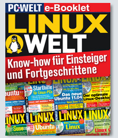

LinuxWelt E-Book 1/18
{kind=link}
Ein extra-großes E-Book zum Jahresende: Auf der Heft-DVD finden Sie ein aufgefrischtes E-Book im PDF-Format, das die wichtigsten Grundlagenartikel aus früheren Heften sowie nach wie vor gültige Anleitungen zusammenfasst. Hier erfahren Sie mehr über Linux-Grundlagen, lernen den Umgang mit der Kommandozeile und steigen in die Systemadministration ein. Andere Artikel, die in verschiedene Rubriken zu Grundlagen, Distributionen, Server, Hardware, Raspberry Pi, Sicherheit, Software, Netzwerk & Internet und Boot unterteilt sind, gehen mehr ins Detail und wenden sich an Anwender, die bereits über solides Linux-Wissen verfügen.
Das PDF-Dokument lässt sich per Reader oder mit Firefox (ab Version 45) einfach unter Linux, Windows und Mac OS X lesen. Einschränkungen über Digital Rights Management ist das PDF nicht unterworfen, so dass es sich überall öffnen lässt, auch auf Smartphones und Tablets.
Das PDF liegt auf der DVD im Verzeichnis Ebook.
Neu: Linux-Projekte für Fortgeschrittene
In der Rubrik "Linux für Systembastler" geht es um Projekte abseits der alltäglichen Aufgaben. Neben anspruchsvollen Anpassungen für fortgeschrittene Desktop-Anwender geht es auch um Serverthemen wie SSH, Cronjobs und das Linux-Terminal. Natürlich darf auch Docker nicht fehlen. Die zehn Einzelbeiträge bringen jeweils ein Thema kurz und bündig auf den Punkt und laden zum Nachbauen ein.
Neu: Populäre Distributionen
Diese Rubrik stellt die wichtigsten Linux-Distributionen und auch einige Live-Systeme vor. Hier geht es nicht nur um Ubuntu, Linux Mint und Open Suse. Auch Elementary OS, der Debian-Abkömmling Bunsenlabs, Bodhi Linux und die Familie um die Live-Systeme Puppy Linux kommen zur Sprache. Ein separater Beitrag stellt die wichtigsten Reparatursysteme vor, um liegen gebliebene Linux-Installation wieder flott zu machen.

Raspberry Pi & Co
Die weltweit fünf Millionen verkauften Raspberry Pi haben innerhalb von drei Jahren eine Anwender-Zielgruppe zurück erobert, die schon mal als beinahe ausgestorben galt: Elektronik-Bastler und Hobby-Programmierer mit semi-professionellen Ansprüchen und einem ungeheuren Erfindungsreichtum. In unserer neuen Rubrik sind Artikel zum Raspberry Pi und vergleichbaren Mini-Computern aus den vergangenen Heft-Ausgaben zusammengefasst. Es finden sich viele praktische Beispiele für den Aufbau eines kleinen Medienservers, eines Datei-Synchronisationsservers für die eigene Cloud und für OpenVPN-Gateways. Zudem geht es um Hausautomation, Treiber-Nachrüstung und andere Lösungen von Aufgaben. Eine Übersicht der Linux-Systeme für Mini-PCs sowie ein nach wie vor aktueller Vergleich verschiedener Platinen wie den Odroid.
Booten und Reparieren von Bootloadern
Ein Special zum Thema Problemlösungen rund um den Systemstart geht auf die typischen Schwierigkeiten beim Systemstart ein und zeigt dazu Wege und Workarounds zur Lösung auf. Zudem geht es noch um die Erstellung bootfähiger USB-Sticks, die Reparatur von Bootloadern und um Grub 2. Ein Linux-System muss nicht auf der lokalen Festplatte liegen, sondern kann auch über das Netzwerk mittels PXE-Boot gestartet werden. Und wenn Live-Systeme nicht starten wollen, liegt dies häufig an Inkompatibilitäten mit der Hardware, wobei dann in den meisten Fällen die gezeigten Boot-Parameter weiter helfen.
Dies ist nur eine kleine Auswahl an Themen. Eine komplette Übersicht liefert das Inhaltsverzeichnis im E-Book im PDF-Format.
Das PDF-Dokument lässt sich per Reader oder mit aktuellen Webbrowsern wie Firefox und Chrome/Chromium einfach unter Linux, Windows und Mac OS X lesen. Einschränkungen über Digital Rights Management ist das PDF nicht unterworfen, so dass es sich überall öffnen lässt - auch auf Smartphones und Tablets.